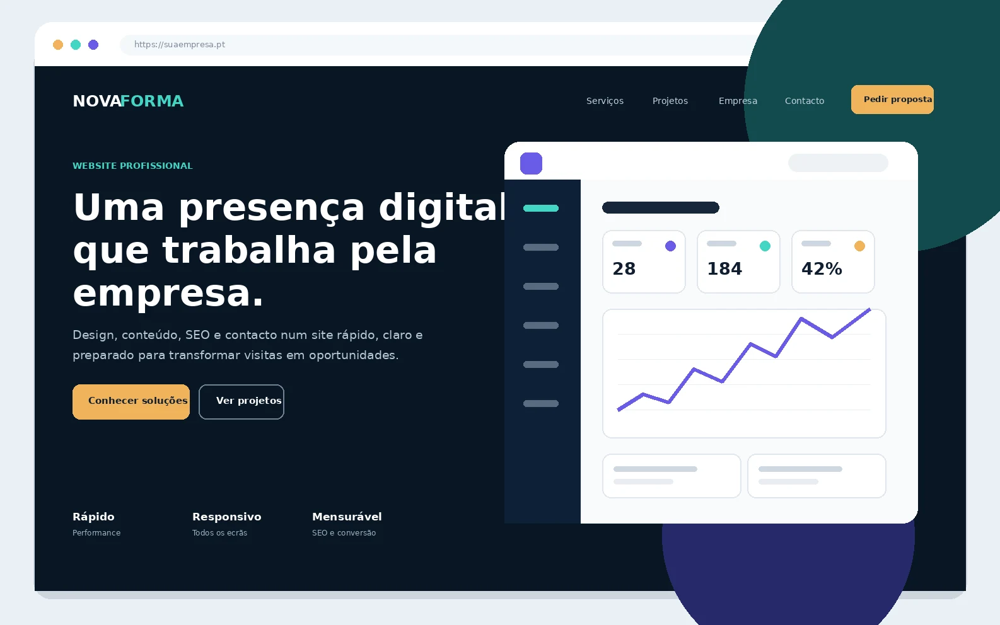

Presença digital
01

Websites e lojas online
Sites rápidos, responsivos e preparados para apresentar a empresa, captar contactos ou vender produtos e serviços.
- Website institucional ou landing page
- Loja online e catálogo digital
- SEO base, métricas e formulários